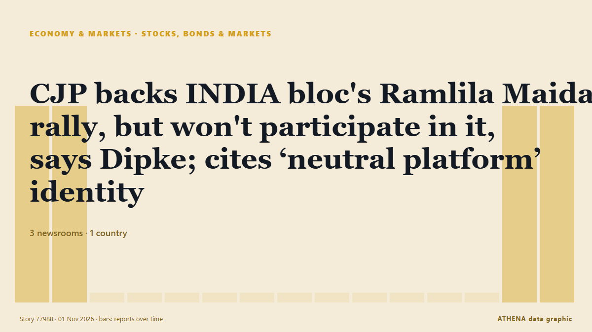

Acciones, bonos y mercados
| 19 oct | 0 |
|---|---|
| 20 oct | 0 |
| 21 oct | 1 |
| 22 oct | 3 |
| 23 oct | 1 |
| 24 oct | 0 |
| 25 oct | 0 |
| 26 oct | 2 |
| 27 oct | 1 |
| 28 oct | 1 |
| 29 oct | 3 |
| 30 oct | 8 |
| 31 oct | 4 |
| 1 nov | 0 |
Los titulares se muestran en inglés, tal como se publicaron.

CJP backs INDIA bloc's Ramlila Maidan rally, but won't participate in it, says Dipke; cites ‘neutral platform’ identity
Abhijeet Dipke said the CJP supported the cause but would maintain its independent identity. de Hindustan Times
Bethany thought only veterans and first responders got PTSD. Then she gave birth
Thousands of parents and experts have made submissions about gaps in postpartum healthcare to a parliamentary committee on women’s health, which will hold its first hearing on Monday in Sydney. de Sydney Morning Herald
Nasdaq faces $2 trillion wipeout in October as AI spending fears deepen
More than $2 trillion in market value is set to be wiped from the tech-heavy Nasdaq 100 this month, as Big Tech earnings intensified investor scrutiny of whether the billions being poured into… de The Korea Times
Treasury Says Iran’s Economy Is Crippled
The report does not claim the Iranian government is close to collapse, but says the rial has lost about a quarter of its value since August, inflation has reached 90%, and no oil has been loaded onto… de Kurdistan24 (English)
France faces long-term debt risks despite no immediate crisis, Eurobank says
France is not facing an immediate risk of a public debt crisis comparable to the eurozone turmoil of the 2010s, but persistent deficits, weak economic growth and rising borrowing costs pose… de Cyprus Mail
Anthropic expected to receive high ‘junk’ rating from credit agencies following IPO, report says
Private capital giant says AI group is expected to receive ‘high’ junk rating in shift from previous guidance. de Financial Times - Markets
US Treasury extends Serbian oil firm NIS operating license until December 11 — TV
NIS submitted an extension request to OFAC for its current operating license on October 24. de TASS (English)
Bulgarian Stock Market Rallies as It Hits Nearly 19-Year High
BCS World of Investments expects the MOEX Index to remain above 2,400 points on Friday. de TASS (English)
Dakar Rally 2027 will be held in Portugal and Morocco, say organisers
The Dakar Rally was moved from Saudi Arabia to Portugal and Morocco over security concerns stemming from Houthi attacks and the war in the Middle East. de Free Malaysia Today
Tinubu prays for Nigeria’s peace, unity at lesser Hajj
[Vanguard] The Allied People's Movement, APM, has challenged President Bola Tinubu to disclose his actual destination, insisting that he should remain in Nigeria to pray for the country and tackle… de AllAfrica
Congress approves supplementary credit to address El Niño and other urgent needs
The plenary of the Congress of the Republic approved the Executive branch’s legislative proposal to access supplementary credits. de Andina (English)
Jio’s blockbuster debut puts valuation, earnings in focus
India’s second-most valuable listed company now needs to show investors the money. de The Business Times
Microsoft Up, Google Down. A Tale of Two Hyperscalers.
Investors are showing little patience for lavish spending and meager returns on companies’ artificial intelligence bets. de New York Times Business
McCullum backs Brook's captaincy after England's tri-series flop
Coach targets improvement after narrow Pakistan defeat as World Cup looms. de Express Tribune
Sonia Gandhi makes Instagram debut, shares first look of upcoming memoir ‘Belonging: A Journey Of Love’
In her first post, Sonia Gandhi described the memoir as a story of “love, duty, loss and finding a place to belong” de Hindustan Times
Stock Market Crash, Sensex Today: Sensex Closes 450 Points Lower Amid Mixed Global Cues, Oil Price Rise
Stock Market, Sensex, Share Market, Nifty Crash: Brent crude tops $110 as fresh attacks in Saudi Arabia raise concerns over oil supplies. de NDTV
Seoul stocks open lower on Wall Street losses, AI concerns
South Korean stocks opened lower Friday, tracking overnight losses on Wall Street, as renewed concerns over the sustainability of the artificial intelligence (AI) boom weighed on investor sentiment. de Korea Herald
‘They are trying to intimidate us’: Indonesia’s Prabowo remains defiant in the face of an MSCI double downgrade
MSCI's proposal to reclassify Indonesia as a "standalone" market triggered a stock rout and a presidential outburst. de Fortune
Dangote Refinery’s IPO closes with investors from 120 countries
"This is a historic achievement for Africa. de Vanguard